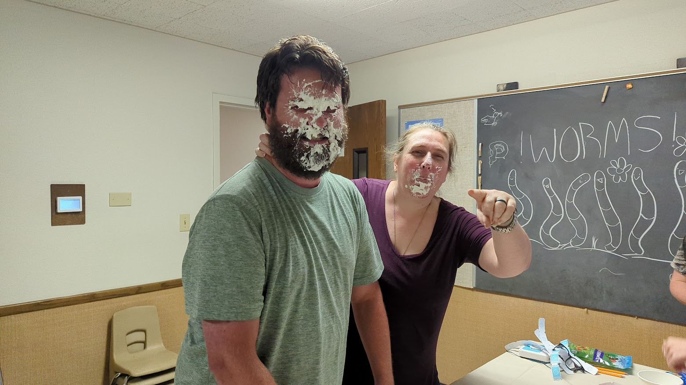

I am currently in the Interdisciplinary degree with Genealogy, Agriculture, and Entrepreneur as my focuses. I'm taking this class just for something to do.
I love a ton of things but don't have the ability to do much anymore since I became disabled.
I'm married to the most amazing man on earth, Kevin Cox. I have 1 adult bio-son at home, wrapping up his BYUI degree. I have a bonus/adopted daughter (bio-cousin) teen, homeschooled but starting a new-to-us co-op this year so that's been chaotic. I have another bonus daughter, adult, who lives across the country.
I've been writing websites since the 90s, typing HTML into notepad and uploading to test it. I started because I found out genealogy could be online so I started writing genealogy sites constantly.
I've been a member my whole life, baptised at 8yo.
I'm a disabled combat vet and pretty broken, so I just do what I can these days.
